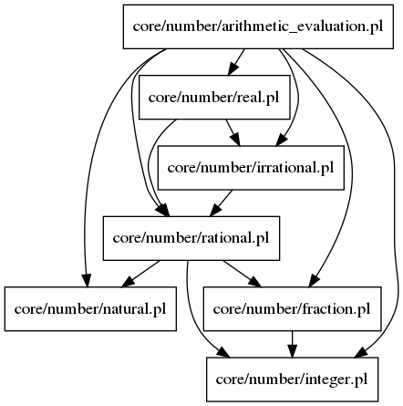

Documentation for Prolog file: arithmetic_evaluation.pl
- This file contains all predicates needed to evaluate arithmetic expressions between real numbers, where the result of operating two rational numbers is another rational number.
- For example, the result of 2/3 + 4/5 is not given as 1.46667, but as 22/15.

-
- Form:
- eval_sum(A, B, S)
- Description:
- S is the summation of A and B.
-
- Form:
- eval_sub(A, B, S)
- Description:
- S is the substraction of A from B.
-
- Form:
- eval_prod(A, B, P)
- Description:
- P is the product of A and B.
-
- Form:
- eval_div(A, B, D)
- Description:
- D is the result of dividing A and B.
-
- Form:
- eval_pow(A, B, P)
- Description:
- P is the result of raising A to the power B.
- Constraints:
-
- Form:
- eval_pow(A, N)
- Description:
- N is the result of multiplying by (-1) the value A.
-
- Form:
- Expr(Expr)
- Description:
- Definition of arithmetic expression: this predicate fails on all values of Expr that are not expressions:
A + B
A - B
A*B
A/B
A^B
-
- Form:
- arith_expr_eval(Expr, Result)
- Description:
-
- Form:
- factorial(Expr, F)
- Description:
- F is the factorial of the result of eavluating the arithmetic expression Expr.
- Constraints:
- Expr is an arithmetic expression.
Generated with DYP